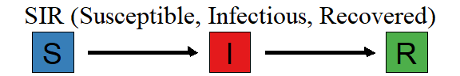
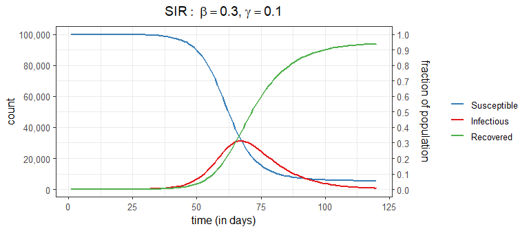
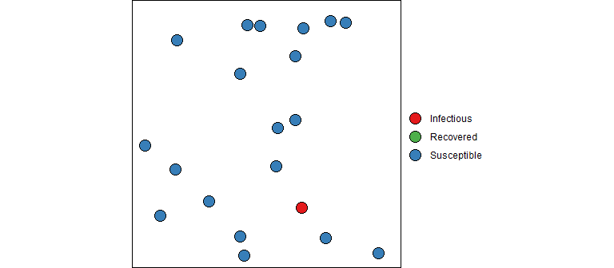
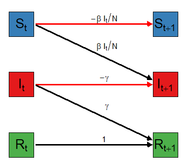
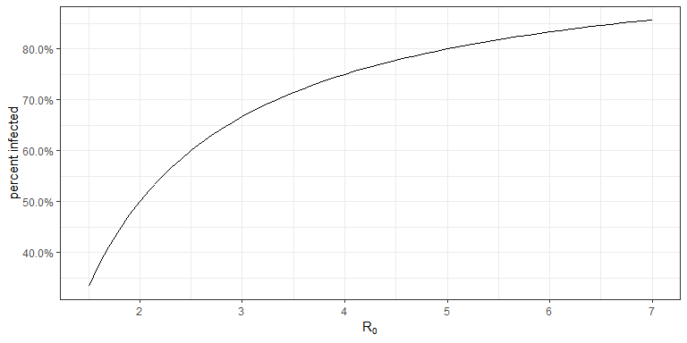
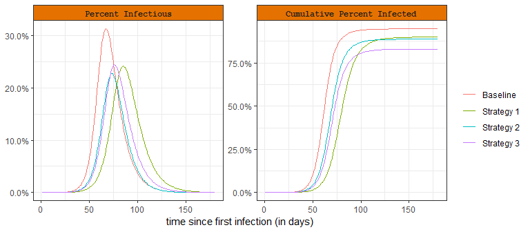
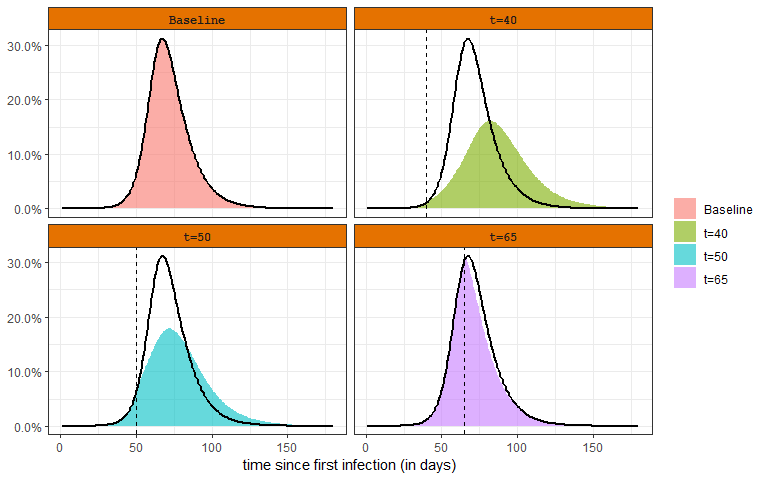
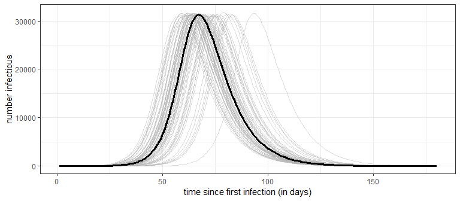
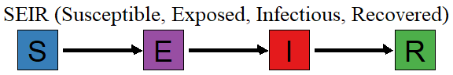

A brief introduction to the SIR model and what is tells us about the spread of COVID-19.
Pay attention a minute everybody, I’ve got an announcement to make. It’s about SIR.
Ok, ok, I know. Sir, played by Sidney Poitier in the classic movie, To Sir, with Love is not the same as the S-I-R epidemiological model. But I needed a catchy title, and this was the first thing that popped into my head. It’s been a long time since I watched the movie, but I remember it being about a teacher who is able to reform his class of deviant youths. I don’t know if the following explanation will lead to a youth reform movement, but who knows? We are all stuck at home, and by this time you are probably thinking that your kid’s teacher was lying when they told you your child was a pleasure to have in class; so give it a try, maybe SIR will change your life too.
The SIR model is one of the most basic models for describing the temporal dynamics of an infectious disease in a population. It compartmentalizes people into one of three categories: those who are Susceptible to the disease, those who are currently Infectious, and those who have Recovered (with immunity). At its most basic level, the SIR model is a set of equations that describes the number (or proportion) of people in each compartment at every point in time. The SIR model is often represented with the following flow diagram that shows the three states (S, I, and R) and arrows depicting the direction of flow between the states.

At this point in the pandemic, you may have seen the usual graphical output from a SIR model that shows the number (or proportion) of people in each state over time

These curves come from the (continuous time) SIR model which specifies a set of three ordinary differential equations:
\[ \frac{d S_t}{dt} = -\frac{\beta I_t S_t}{N}, \qquad \frac{d I_t}{dt} = \frac{\beta I_t S_t}{N} - \gamma I_t, \qquad \frac{d R_t}{dt} = \gamma I_t \]
Do I need to say more? As the saying goes,“An equation is worth a thousand words”. But for reader who would rather look at pictures than equations, I’ll try to make these equations a bit more understandable (in less than 1000 words).
Instead of diving straight into the equations, let’s dip our toes in the water and think about how an epidemic works from the first infection. At the very beginning, a contagious person enters a population full of susceptible people. Unless they are quarantined, they move about in the population potentially infecting some of the susceptible population. The SIR model is not very sophisticated in how it models the interactions between members of a population. It assumes the infected people can mix with anyone in the population with equal likelihood; there are no geographic, demographic, or other factors that separate members of a real population. Every day a contagious person will randomly move around the population infecting any susceptible person they come into close enough contact with. Let’s say a contagious person will come into close contact with (and cough on, sneeze on, kiss, etc.) an average of \(\beta\) (beta) people each day; if those people are susceptible (i.e., not immune) they will become infected otherwise they will just benefit from the close contact. If there are \(S_t\) susceptible people on day \(t\), the expected number infected by our carrier is \(\beta S_t / N\), where \(S_t/N\) is the probability a close contact is with a susceptible person.
Our infectious carrier will continue this process of randomly contacting people each day until they are no longer contagious (either by recovery or death). Suppose that every day a contagious person has probability \(\gamma\) (gamma) of becoming non-contagious. Some readers will recognize that this specifies a geometric distribution for the length of time an infected person is contagious. One property of this model is that the average number of days that someone stays contagious is \(1/\gamma\).
Notice that we have specified two model parameters: \(\beta\) and \(\gamma\). Because these are greek letters you know they are important! Combined, they make another parameter you may have heard of, the \(R_0\) (“R nought”). The \(R_0\), known as the basic reproductive number, is defined as the expected number of people infected from a contagious person over the length of their contagiousness (in a fully susceptible population). If you were paying attention and keeping notes, you may be able to work out that \(R_0 = \beta/\gamma\) which is the expected number of close contacts per day (\(\beta\)) multiplied by the average number of days contagious (\(1/\gamma\)). If \(R_0 > 1\) (or equivalently, \(\beta > \gamma\)), then we will likely have an epidemic on our hands as each infected person will infect more than one other on average, who will infect more than one other, and so on (i.e., exponential growth) until we reach herd immunity (but more on that later).

“But what about those equations”, you ask. And I’m glad you asked because math is fun! So far we have described how one contagious person moves through the system randomly infecting people each day until they are no longer contagious. But now let’s bring in the dynamics since we are all in this together (literally). Refer back to the SIR ODE equations, they describe the change in counts at an instance of time. We can consider a discrete time version of these equations that describe the changes each day using the concepts described above. I should note that this will give an approximation of the actual SIR output (and there are better approximations then the one described below). However, don’t let this disrupt your sleep; remember that the SIR model is only an approximation of reality and a discrete time perspective is, in my opinion, a better representation than continuous time (e.g., humans don’t randomly mix for 24 hours each day, data is reported daily, etc). Also keep in mind that the model parameters must be estimated, so the fitted curve for the discrete time version should be similar to the continuous time version (even if the estimated parameter values are slightly different).
For notation, take \(S_t, I_t, R_t\) as the number of Susceptible, Infectious, and Removed people in the population on day \(t\). The total population size \(N\) is assumed to stay constant over the observation period and is equal to the sum of all counts (i.e., \(N = S_t + I_t + R_t\)). This discrete time version of the SIR model specifies the equations: \[ S_{t+1} - S_t = -\frac{\beta I_t S_t}{N}, \qquad I_{t+1} - I_t = \frac{\beta I_t S_t}{N} - \gamma I_t, \qquad R_{t+1} - R_t = \gamma I_t \] This shows that the three SIR equations describe how the counts in each category change in one day. Consider the change in the number of infectious; it is the sum of two components: \[ \begin{align} I_{t+1} - I_t &= \text{newly infectious} - \text{removed} \\ &= \frac{\beta I_t S_t}{N} - \gamma I_t \\ &= I_t \left(\beta S_t/N - \gamma \right) \end{align} \] The last line makes clear that this term just multiplies what we described above for a single infectious person by \(I_t\), the total number of infectious people at time \(t\). In other words, if one infectious person is expected to infect \(\beta S_t / N\) other people on day \(t\), then \(I_t\) infectious people are expected to infect \(I_t \cdot (\beta S_t / N)\) on day \(t\). Likewise, if each infectious person has probability \(\gamma\) of recovery or death on day \(t\), then the expected total number of infected people that recover (or die) on day \(t\) is \(I_t \gamma\).
We can also examine the first term, corresponding to the number of newly infectious people, with a slightly different formulation \[ \begin{align} \text{newly infectious} &= \left(\frac{\beta I_t}{N}\right) S_t \\ &= f_t S_t \end{align} \] As a reminder, \(\beta\) is the transmission parameter and it controls the rate that infectious people can spread the disease (larger values of \(\beta\) imply faster spread). The second line makes it explicit that the number of newly infected people at time \(t+1\) is proportional to the number of susceptible people at time \(t\). Specifically, \(f_t=\beta I_t /N\) is referred to as the force of infection and is the fraction of susceptible people who become infectious during time t. Notice that \(f_t\) depends on both the transmission parameter \(\beta\) and the proportion of people who are infectious at time \(t\).
The second term in the equation for the change in infectious people models the number of infectious people that are removed (i.e., recover with immunity or die): \[ \begin{align} \text{removed} &= \gamma I_t \end{align} \] The \(\gamma \in [0,1]\) parameter is the fraction of infectious people that are removed each day. When \(\gamma\) is large, people will recover (or die) quickly and won’t have as much time to infect the susceptible population. However when \(\gamma\) is small, people stay infectious longer and have more opportunity to infect others. Because this model is based on expected values, we can consider the separation of \(\gamma\) into two sub-components to handle deaths and recoveries separately (e.g., \(\gamma = p_{\text{death}} \gamma_{\text{death}} + (1-p_{\text{death}})\gamma_{\text{recovery}}\)).
If you look back at the SIR equations you’ll notice that the change in susceptibles and removed are based on the two components we just described. That is, the change in susceptibles is minus the number of newly infected and the change in removed is the number of newly recovered. This ensures that total number of people in all bins is always equal to \(N\).
For the visually inclined, here is my attempt to represent the flow of counts between times \(t\) and \(t+1\). The equations above the arrows show the fraction of the counts in the left side bin that get transferred to the right side bin with color indicating if the count is positive (black) or negative (red).

Notice that the flow out of each bin must sum to 1 to preserve the required property that total counts must equal the population size. Look now at the bins on the right side. Because \(S_{t+1}\) only gets a negative flow it will only decrease (or stay the same) over time. The number of removed at time \(t+1\), \(R_{t+1}\) only gets positive flow and will only increase (or stay the same) over time. The situation for the number of infectious, \(I_{t+1}\) is different in that it can increase or decrease over time.
Hopefully this provides you with a little better understanding of the SIR model. It also reveals that the quote is wrong - an equation must be worth more than 1000 words since I have probably reached that limit and still have a few more things to say about herd immunity and \(R_0\).
Let’s concentrate on the number of infectious individuals and write out explicitly the estimate for time \(t+1\): \[ \begin{align} I_{t+1} &= I_t + \left(\frac{\beta I_t}{N}\right) S_t - \gamma I_t \\ &= I_t \left(1 + \beta\frac{S_t}{N} - \gamma \right) \end{align} \] This shows that \(I_{t+1}\), the number of infectious tomorrow, can be expressed as a multiple of the number of infectious today. This leads to the following conditions that determine if the number of infections is increasing, decreasing, or at its peak based on the two model parameters \(\beta\) and \(\gamma\) as well as the proportion of the population that is susceptible \(S_t/N\). \[ \begin{alignat}{2} \beta\frac{ S_t}{N} \; &> \; \gamma \qquad &&\text{Infectious Count Increasing} \\ \beta\frac{ S_t}{N} \; &= \; \gamma \qquad &&\text{Peak Infectious Count} \\ \beta\frac{ S_t}{N} \; &< \; \gamma \qquad &&\text{Infectious Count Decreasing} \end{alignat} \]
The peak of the epidemic will occur when the proportion of susceptible people is equal to the ratio \(\gamma/\beta\) \[ \begin{align} \frac{ S_t}{N} &= \frac{\gamma}{\beta} = \frac{1}{R_0} \qquad \text{Peak Conditions} \end{align} \] which shows one reason \(R_0 = \beta/\gamma\), the “R nought” value mentioned above, is a prominent part of the discussion.
Let’s examine this in more detail. According to the SIR model, the peak of the infection, that is the day when the number of infected people is greatest, is the first day when the proportion of susceptible peoples fall below \(1/R_0\). Equivalently, this suggests the epidemic will peak when the cumulative proportion of the population that has been infected exceeds \(1-1/R_0\). This is what is meant by the term herd immunity - when the fraction of the population that is immune reaches a large enough level that the number infected starts to decline.
A recent post by epidemiologists at Johns Hopkins University suggests that the US is not close to herd immunity. Below is a plot that shows, according to the SIR model, the percentage of a population that needs to be immune before it reaches herd immunity for a given \(R_0\) value.

The Johns Hopkins article suggests about 70% of the US needs to be immune to reach herd immunity; this would put \(R_0= 3.33\). There are all sorts of estimates on \(R_0\) for COVID-19, but most that I have seen range between 1.5 and 6.5 (which will of course vary region to region and over time).
Now that you know something of the SIR model, it can be insightful to consider how the dynamics change under different strategies. Here are three things a population may consider doing to limit the number of peopled infected with COVID-19
Below is a plot that shows how the infection dynamics are impacted under each strategy. The left facet shows the percentage of the population that is infectious (\(I_t/N\)) and the right facet gives the percentage of population that has been infected (\((I_t + R_t)/N\)). The baseline model uses \(\beta=0.30, \gamma=1/10\) (\(R_0 = 3.0\)) in a population of 100,000 people. This implies that each infectious individual will come into contagiously close contact with an average of 0.30 people per day and will stay contagious for an average of 10 days. On day 1, there is a single infectious person leaving \(S_1=99{,}999\) susceptible, and \(R_1=0\) recovered. Strategy 1 reduces \(\beta=0.25\), Strategy 2 increases \(\gamma=1/8\) (contagious for 8 days on average), and Strategy 3 considers that 10% of the population is immune on day 1 (\(S_1=90{,}000\)).

Social distancing policies, limitations on group sizes, and quarantines are used to reduce the transmission rate (decrease \(\beta\)). This action has been taken by most governments around the world to limit the number of people who are infected and results in a “flattening of the curve” as shown by Strategy 1 in the plot. This strategy forces the peak down (and therefore reduces hospital overcrowding), but extends the total outbreak duration. As can be seen from the cumulative plot on the right, it also reduces the total percentage of the population that will be infected.
The second strategy is to reduce the time someone is infectious (increase \(\gamma\)). This could be accomplished by medications, supplements, nutrition, exercise, and other treatments. Remdesivir, for example, may reduce the infectious period for up to 4 days on average. In this hypothetical scenario, the SIR model suggests that even a 2 day reduction in the time someone is infectious can have a large impact in the peak number of infections and total number of people infected.
The third strategy is to reduce the susceptible population. This refers to a vaccine, which doesn’t yet exist for COVID-19. According to this SIR model a 10% vaccination rate would not only lead to a reduction in the peak infectious count but also provide the largest reduction in total number of infections (out the three scenarios).
Hopefully, this sheds some light on the different public health responses you have been hearing about in the headlines. There are more variations on the types of mitigation efforts available and certainly better models in which to evaluate how such efforts will impact the disease, but these three strategies and the basic SIR model will take you far in understanding how it all works.
The purpose of this article is to provide a brief introduction to the SIR model and explain a few of its properties. Hopefully this has cleared up some of the confusion surrounding terms you have been hearing about in the news and also given you a bit more insight into how a compartmental epidemic model works. It may have also left you with other questions and concerns; I’ll outline a few thoughts on where to go next.
The first thing worth mentioning is that the SIR model is undoubtedly wrong in the sense that it doesn’t explain all the complexities and dynamics in the COVID-19 pandemic. But as George Box famously said “All models are wrong, but some are useful”. And the SIR model can be useful in many ways. First, it is a good starting place for understanding the more complex models. Also, never forget that the parameters of these models must be estimated. A simple model can provide better predictions than a more realistic (and complex) model when there is not enough data or the data quality is poor. And we are dealing with both sparsity and quality issues in the COVID-19 data. This is an often under-appreciated aspect of modeling and data analysis.
Nevertheless, I’d say the basic SIR model is too simplistic to be used for accurate modeling of the COVID pandemic. Fortunately, there are several relatively simple ways to improve it. First, we can consider that the transmission parameter \(\beta\) (and hence \(R_0\)) can change over time, especially due to social distancing and stay at home regulations. I would be skeptical of any COVID-19 model that didn’t account for changes in the transmission rate, especially with the unprecedented movement restrictions we have seen around the world. Here is a simple analysis that shows how the infectious counts respond if the transmission parameter \(\beta\) is abruptly changed during the course of the epidemic.

The baseline scenario is the same as what was considered in Changing the Disease Dynamics section, \(\beta=0.30, \gamma=1/10\) (\(R_0 = 3.0\)). The other scenarios consider that \(\beta\) is reduced to \(0.20\) on a certain day (e.g., due to a shelter in place order). The top left panel is the baseline scenario. The other panels show how the infectious rate varies if the intervention occurs at different time points in the course of the epidemic. The black line is provided as a reference to the baseline scenario. These plots reveal that early changes in the transmission rate have the strongest effect. A change close to the herd immunity induced peak (bottom right panel) has very little effect.
The basic SIR model is deterministic. This means that once the model parameters (\(\beta\) and \(\gamma\)) are specified there is no randomness in the model output. This is apparent by considering that all transitions between compartments are specified by expected values and not probability distributions. One consequence of this is that no uncertainty is represented in the model output - something that can lead to poor decision making. Uncertainty in the model output can be estimated with Monte Carlo simulation of a stochastic SIR model. In a stochastic SIR, instead of modeling exactly \(f_t S_t\) newly infectious on day \(t+1\), the number of newly infectious is randomly determined according to a Binomial distribution (\(\text{Bino}(n=S_t, p=f_t)\)). Likewise, the number of infectious people that recover is no longer exactly \(\gamma I_t\), but randomly determined according to the Binomial distribution (\(\text{Bino}(n=I_t, p=\gamma)\)). The stochastic SIR will produce a different set of curves every time it is simulated. To get a sense of the uncertainty, the stochastic SIR can be simulated 100’s or 1000’s of times. For example, below is the result of running a stochastic version of the SIR model 100 times.

Notice that while the peak number of infectious is very consistent (around 31.2K), the timing of the peak has much greater variability, starting as early as day 58 in one simulation and including one simulation that doesn’t reach the peak until day 93. A word of caution: the stochastic SIR only addresses the uncertainty in the model output, but doesn’t address the uncertainty in estimating the model parameters (i.e., it assumes \(\beta\) and \(\gamma\) are known exactly). Parameter uncertainty, especially early in the outbreak when data is limited, will have an even greater influence on how precisely we can make predictions. Making decisions under uncertainty is the rule rather than the exception for this pandemic!
There are many other compartmental models that extend SIR. The closest is the SEIR model that splits out the infected population into two sub-groups, those who are infected but not yet contagious and those who are infectious. The SEIR model is very similar to the SIR model, but Susceptible people who become infected move first move into the Exposed group. There is one additional parameter that controls how long a person stays in the Exposed group before they move into the Infectious state.

The basic framework can be extended to include more detailed compartments and transitions, like having separate parameters for different age groups or how likely people from different geographic locations will interact, etc. For very complex model specifications, Agent-Based Models (ABM) can be employed to understand the corresponding disease dynamics. You can think of an ABM as a type of stochastic compartmental model on steroids; it can capture very complex population behavior using agents that follow relatively simple rules (e.g., leave home between 8-9am, go to work, stop for groceries once per week, go out to eat 2 times per week) and can have individual disease progression (e.g., an older agent has higher probability of becoming hospitalized).
I’ll close this article with mention of an all together different way to estimate epi-curves is with a pattern-based or curve fitting approach. This is the approach taken by Institute for Health Metrics and Evaluation and is based on the observation that over a wide range of parameter values, the SIR/SEIR models maintain a similar shape. For example, notice from the plots above that the curves representing the number/percentage of infectious people look rather bell-shaped. For those of you who have taken a Statistics course, the mention of “bell-shaped” will evoke the wonderful memories of the Central Limit Theorem and the Gaussian or Normal distribution. The IHME modelers exploit this observation and directly estimate the parameters of a Gaussian shaped epi-curve. This approach offers a different way to estimate model parameters (e.g., using fatality data) with a focus on forecasting.
If you see mistakes or want to suggest changes, please create an issue on the source repository.